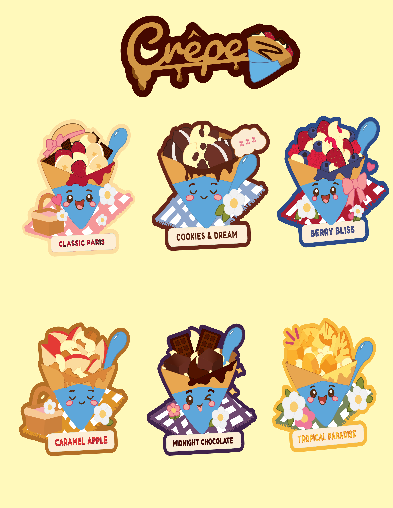
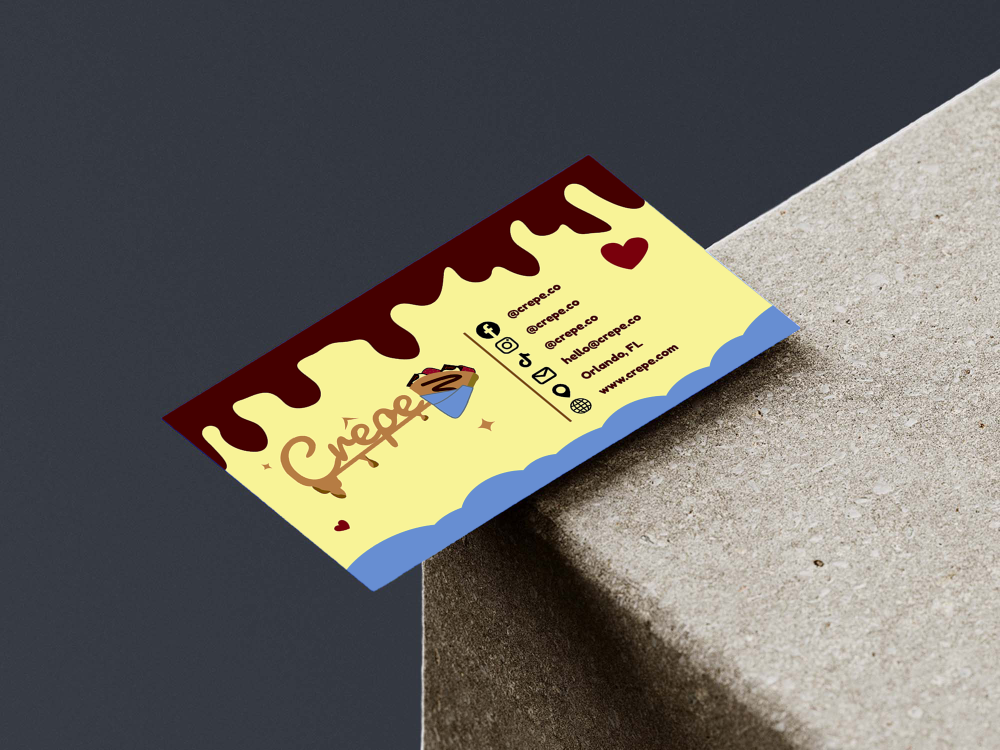
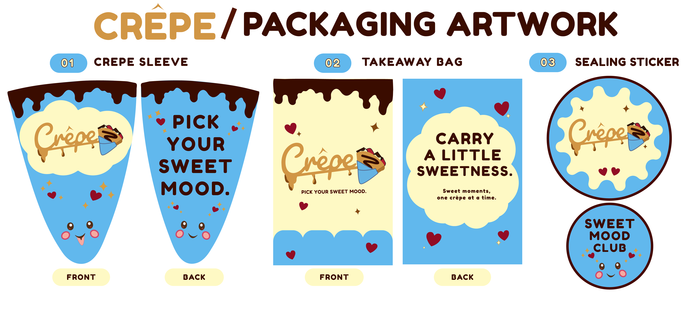
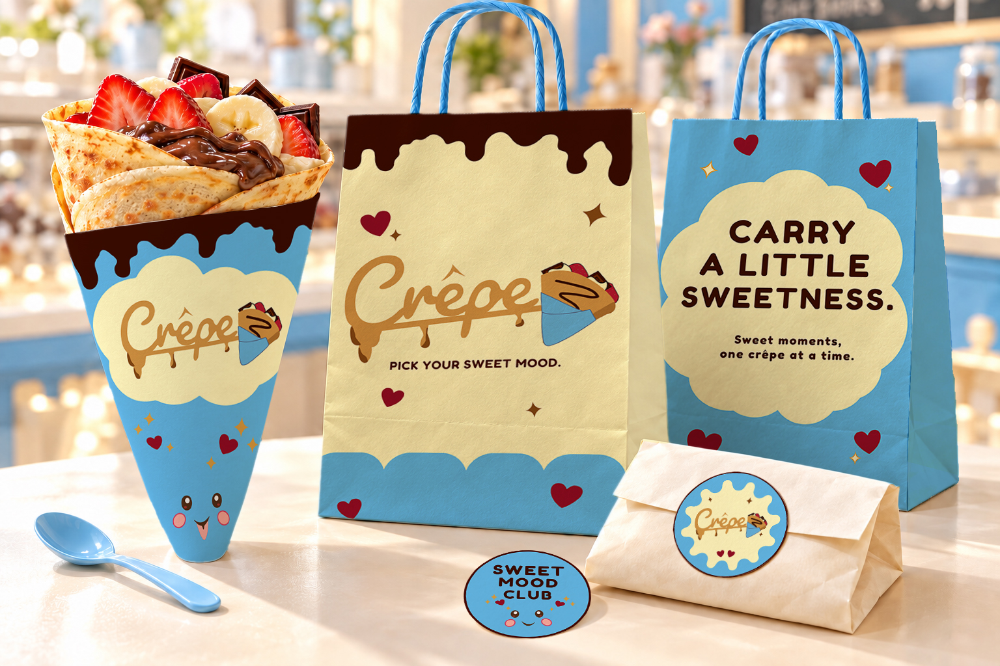
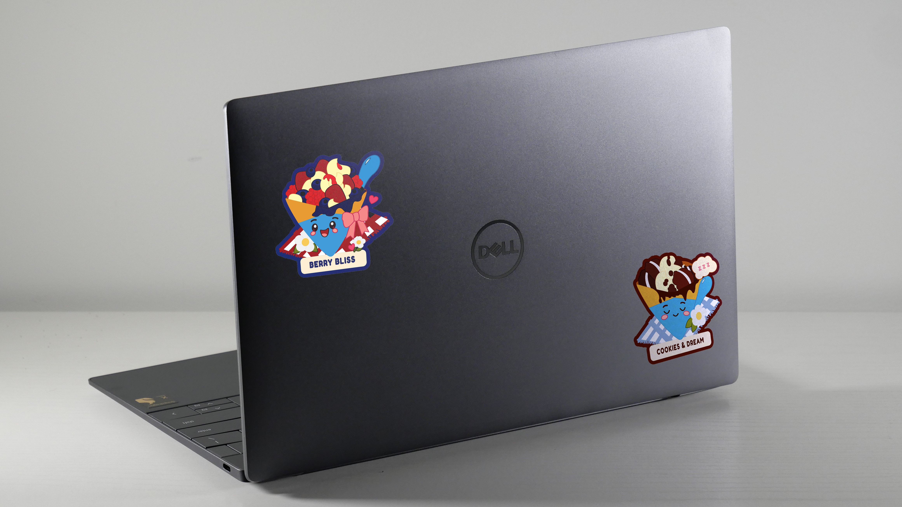
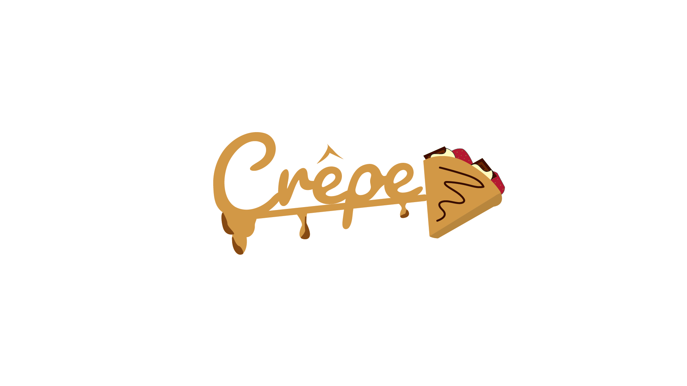
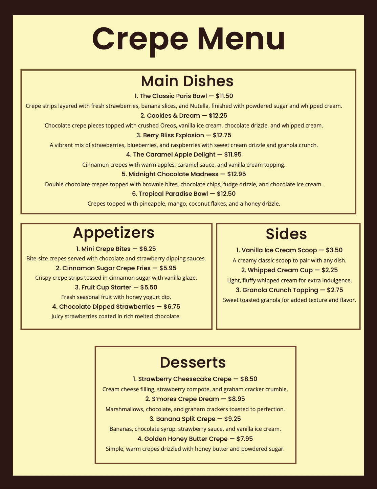

Original logo lettering
Keep the original Crêpe script as vector artwork. Fredoka and Nunito support the logo; they do not replace its lettering. Add the blue wrap and spoon to the updated illustration in Illustrator.
Made of cravings & cute little dreams ✦
A playful dessert world built around golden folded crêpes, blue wraps, curved blue spoons, and flavor friends with a little personality. This Nightmare is sure to give a sweet tooth!

The refreshed brand system
#D19745
RGB 209, 151, 69
#834912
RGB 131, 73, 18
#450800
RGB 69, 8, 0
#B41831
RGB 180, 24, 49
#FFF9BB
RGB 255, 249, 187
#64B4E3
RGB 100, 180, 227
Keep the original Crêpe script as vector artwork. Fredoka and Nunito support the logo; they do not replace its lettering. Add the blue wrap and spoon to the updated illustration in Illustrator.
Keep proportions intact and use the original “C” height as the clear-space guide. Use approved full-color or monochrome versions. Place the logo on quiet backgrounds and avoid stretching, recoloring or adding effects.
Repeat the folded crêpe, blue overlapping wrap, curved spoon, chocolate outlines and little face. Differentiate flavors through recognizable toppings and expressions. Keep the language warm, short and playful.
The font pairing
Golden crêpes, dreamy toppings, and tiny flavor friends. Pick a treat that matches your mood.
Fredoka gives headings a rounded, playful voice. Nunito carries the details with a softer, quieter rhythm. The original script remains the brand signature.
| Role | Typeface / weight | Size | Line height |
|---|---|---|---|
| Logo | Original outlined Crêpe script | Scale proportionally | — |
| Hero heading | Fredoka SemiBold / 600 | 48–80 px | 1.05 |
| Section heading | Fredoka Medium / 500 | 32–48 px | 1.15 |
| Flavor / card title | Fredoka Medium / 500 | 22–26 px | 1.25 |
| Body / descriptions | Nunito Regular / 400 | 18 px | 1.65 |
| Navigation / buttons / prices | Nunito Bold / 700 | 16 px | 1.4 |
| Captions / labels | Nunito SemiBold / 600 | 14 px | 1.5 |
For a printed menu, start with Fredoka 22–28 pt section headings, 14–16 pt product names, Nunito 10–12 pt descriptions and 12–14 pt prices. Check a full-size print before finalizing.
Meet the flavor friends
A little cozy? A little chaotic? There’s a crêpe for that.
Golden crêpe, fresh strawberries, banana slices, vanilla ice cream, and fluffy whipped cream. A familiar favorite with a playful little smile.
Golden crêpe, crunchy chocolate sandwich cookies, vanilla ice cream, and chocolate drizzle. A dreamy treat for your cozy, cookie-loving mood.
Strawberries, blueberries, and raspberries meet a golden crêpe, sweet blueberry drizzle, vanilla ice cream, and whipped cream. Bright, bubbly, and bursting with berry goodness.
Golden cinnamon crêpe, warm apples, buttery caramel, vanilla ice cream, and whipped cream. A cozy little celebration of comforting flavors.
Golden crêpe, brownie bites, chocolate chunks, fudge, vanilla ice cream, and whipped cream. Rich, mischievous, and made for serious chocolate cravings.
Golden crêpe, juicy pineapple, mango chunks, vanilla ice cream, mango syrup, and whipped cream. A sunny escape in every sweet bite.
Four coordinated deliverables
Four illustrator deliverables are planned. Each will be presented as an exported flat image and an application mockup.
Updated logo
I preserved the original logo and chose to incorporate the blue wrap with the refresh!
My final updated logo export.

Application mockupPrinted brand card
Updated Mockups
Here I wanted to establish new mockups for the brand! I really wanted to make the packaging fun and playful, but still showcase the visuals in a practical way.

Flat artworkFinal food packaging export

Application mockupFood packaging
Kawaii Stickers
I drew the kawaii wrap-and-spoon characters in Illustrator. Using consistent outlines, blue wraps and spoons, with distinctive ingredients and expressions for each flavor!
Final stickers export

Application mockupStickers on a laptop
Process Post
This process post documents the thinking behind the Crêpe campaign — what needed to be solved, how the original work informed the refresh,how the visual direction developed, and how the final system became a coordinated set of brand deliverables.
Crêpe began as a F.I.R.S.T. Institute menu and logo project. The challenge was to expand that original work into a stronger, more complete campaign without losing the identity that already made the brand recognizable. The refresh needed to feel cohesive across the logo, menu, packaging, stickers, and application mockups.
I built the campaign around the idea “Pick your sweet mood.” The original gold script, folded crêpe, chocolate details, blue wrap, and blue spoon stayed at the center of the identity. I then expanded those elements into a playful kawaii system with expressive flavor characters, a consistent color palette, supporting typography, and coordinated brand applications.
I started by reviewing the original logo, menu, style direction, flavor names, products, and pricing. I identified the visual pieces worth preserving and focused the refreshed direction on qualities that fit the concept: rounded forms, readable hierarchy, recognizable dessert ingredients, expressive characters, and a bright child-friendly presentation.
The strongest part of the original identity was its personality, but the system needed more consistency across applications. I concluded that the gold wordmark should remain the signature while Spoon Blue, Vanilla Cream, Strawberry Red, Chocolate, and supporting accent colors could create a clearer visual system. Fredoka and Nunito gave the campaign a predictable hierarchy without replacing the original script.
I explored ways to turn each flavor into its own little personality. The main direction became six collectible crêpe characters that share the same wrap-and-spoon construction while changing toppings, color accents, and expressions. I also explored how the same shapes, hearts, drips, and playful copy could extend into packaging and branded mockups.
The campaign developed by comparing the refreshed work against the original assets and tightening consistency from one deliverable to the next. The logo gained the blue wrap treatment, the menu gained a clearer Fredoka / Nunito hierarchy, and the character system became more consistent through repeated outlines, proportions, and color use. The final mockups show how those decisions work in practical applications.
I focused on repetition, contrast, hierarchy, alignment, proximity, consistency, and balance. Repeated colors, outlines, shapes, and character construction unify the campaign. Strong scale and color contrast guide the eye, while consistent spacing and typography keep the playful visual language readable across both print and digital applications.
Iteration snapshots


This campaign is designed to showcase brand strategy, logo refinement, vector illustration, menu hierarchy, typography, mockup deliverables, and collectible sticker designs.
The creative direction takes the original concept and adds a little more child-like flair that helps keep the identity rooted in the original, but updates and integrates a new wrap-and-spoon design. The new brand identity completely captures that curated designs targeted to a child audience!